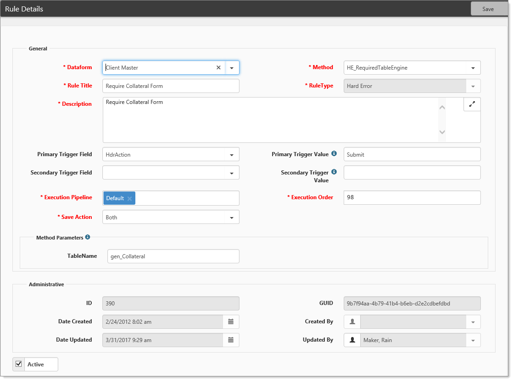
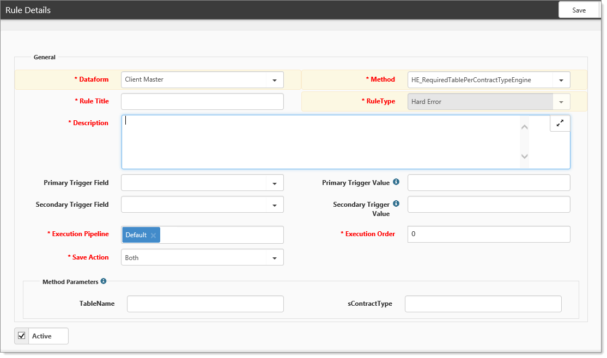
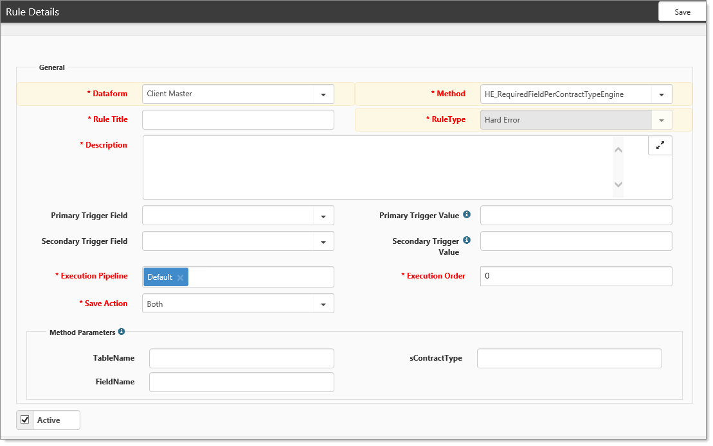
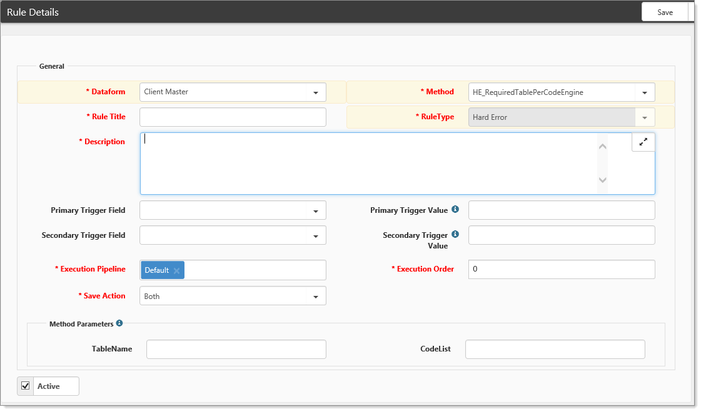

The configurability of ClientSpace allows you to ensure specific information is gathered as part of the Pricing process. One way to do so is by requiring the presence of a dataform before submissions can be made. There are several ways this can be configured, all through business rules.
This topic provides an overview of common required Table rules and how they can be configured to ensure the appropriate information is gathered throughout the sales and pricing process.
So what makes a dataform required anyway?
Several business rules, both soft and hard error varieties control this functionality. We will look at the hard errors, which stop the workflow process. Through these configurable rules and others like them, as well a s required field engine rules on the dataform, ClientSpace makes it possible for you to design and create pricing workflows to ensure that your sales process is consistent and all required documentation is complete.
HE_RequiredTableEngine
Requires a specific dataform be created for the workspace before allowing the Action to continue. In the previous example, to submit the deal a Collateral form must be created for the workspace.

HE_RequiredTablePerContractTypeEngine
Requires a specific dataform be created for the workspace before allowing the Action to continue based on Contract type. Specific contract types could require different forms.

HE_RequiredFieldPerContractType
Requires a specific dataform field be completed / filled for the workspace before allowing the Action to continue based on Contract type. Specific contract types could require different dataform fields.

HE_RequiredTablePerCodeEngine
If specific Comp Codes are present in the Pricing Batch (rule accepts a comma separated list - no spaces) require a specific dataform to be created for the workspace before allowing the Action to continue.
